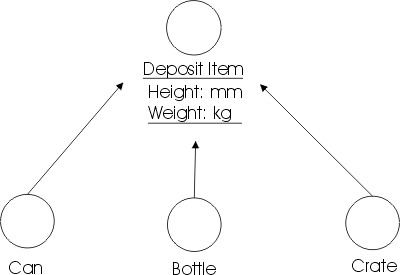
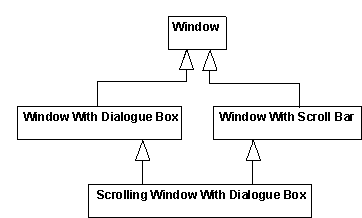
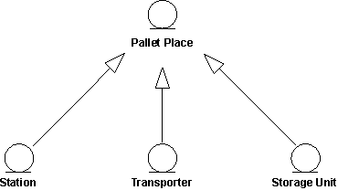
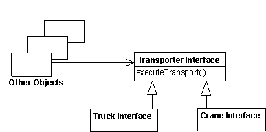
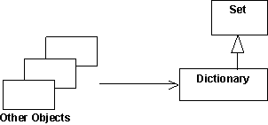
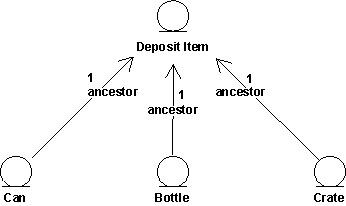

| Рекомендация: Обобщение |
 |
|
| Связанные элементы |
|---|
ОбобщениеМногие вещи в реальной жизни обладают общими. Например, и кошки, и собаки - животные. У объектов также могут быть общие свойства, которые можно выделить с помощью обобщения между их классами. Выделение общих свойств в отдельные классы упростит процесс изменения системы и управление ею в будущем. Обобщение подразумевает, что один класс наследует свойство другого класса. Наследующий класс называется потомком. Класс, свойства которого наследуют, называется предком. Наследование означает, что определение предка, включая все его свойства (атрибуты, отношения или операции его объектов) также верно и для объектов потомка. Графически обобщение изображается в виде стрелки, направленной от потомка к предку. Обобщение можно выполнять в несколько стадий, что позволяет моделировать сложные многоуровневые иерархии наследования. Общие свойства располагаются в верхних уровнях иерархии, а специальные - в нижних. Другими словами, с помощью обобщения можно моделировать концепции более общего характера. Пример В системе по переработке отходов все классы (Консервная банка, Бутылка и Ящик) описывают разные типы отходов. Они обладают двумя общими свойствами - высотой и массой. С помощью атрибутов и операций эти свойства можно оформить в виде отдельного класса Отходы. Классы Консервная банка, Бутылка и Ящик унаследуют свойства этого класса.  Классы Консервная банка, Бутылка и Ящик обладают общими свойствами - высотой и массой. Каждый из этих классов представляет собой частный случай общей концепции Отходы. Множественное наследованиеКласс может наследовать из нескольких других классов путем множественного наследования. Однако обычно у класса бывает только один предок. При использовании множественного наследования будьте готовы к следующим потенциальным проблемам:
 Множественное и повторяющееся наследование. Класс Окно с полосой прокрутки и вложенным окном наследует свойства класса Окно более чем один раз. Здесь может возникнуть вопрос "Сколько копий атрибутов класса Окно добавлено в класс Окно с полосой прокрутки и вложенным окном?". При использовании повторяющегося наследования необходимо иметь четкое определение его семантики. В большинстве случаев семантика определяется языком программирования, который поддерживает повторяющееся наследование. Обычно правила языков программирования, касающиеся множественного наследования, очень сложны, и для правильного использования этих правил необходимо их очень хорошо понимать. Поэтому множественное наследование рекомендуется применять только при необходимости и с большой внимательностью. Абстрактные и конкретные классыКласс, не имеющий экземпляров, и существующий только для наследования другими классами, называется абстрактным классом. Классы, имеющие экземпляры, называются конкретными классами. Обратите внимание, что действующий абстрактный класс должен иметь по крайней мере одного потомка. Пример Сайт Палитра в системе управления складом товаров служит абстрактным сущностным классом, который обладает свойствами, общими для различный типов сайтов Палитра. Свойства этого класса наследуются конкретными классами (Приемный пункт, Оборудование и Помещение), каждый из которых представляет собой сайт Палитра. Все эти объекты обладают общим свойством - содержат одну или несколько палитр.  Класс-предок, в данном случае сайт Палитра, является абстрактным и не имеет собственных экземпляров. ИспользованиеПоскольку каждый стереотип классов имеет свое назначение, наследование между классами разных стереотипов не имеет смысла. Например, если пограничный класс унаследует свойства сущностного класса, то превратится в некий гибрид. Поэтому обобщение применяется только между классами одного стереотипа. Обобщение позволяет установить два вида отношений между классами:
Для создания таких отношений нужно выделить свойства, общие для нескольких классов, поместить их в отдельные классы и установить наследование от этих новых классов. Другой способ - создать новые классы, конкретизируя свойства более общих классов, и установить наследование, чтобы новые классы наследовали свойства более общих классов. Если эти два варианта совпадают, будет нетрудно правильно установить наследование между классами. Однако в некоторых случаях эти варианты не совпадают. Тогда нужно очень тщательно следить, чтобы структура наследования оставалась ясной и четкой. По крайней мере нужно знать назначение каждого экземпляра наследования в модели. Наследование и поддержка полиморфизмаОтношение подтипов означает, что потомок является подтипом, который может полностью заменить всех своих предков в любой ситуации. Отношение подтипов - это частный случай полиморфизма. Оно является важным свойством, позволяющим создавать все клиенты (объекты, которые используют предка) без учета потенциальных потомков этого предка. В результате объекты-клиенты становятся более общими и пригодными для повторного использования. Когда клиент использует действительный объект, он будет работать определенным образом, и объект будет всегда выполнять свою задачу. При наличии отношения подтипов система всегда позволяет вносить изменения в набор подтипов. Пример В системе управления складом товаров класс Интерфейс Оборудование определяет базовый набор функций для связи со всеми типами транспортного оборудования, например, кранами и грузовиками. Этот класс определяет, помимо прочего, операцию executeTransport.  Классы Интерфейс Грузовик и Интерфейс Кран наследуют свойства класса Интерфейс Оборудование. Таким образом, объекты обоих классов будут отвечать на сообщение executeTransport. Эти объекты могут в любое время заменить Интерфейс Оборудование и будут при этом обладать его поведением. Другие объекты (клиенты) могут послать сообщение в объект Интерфейс Оборудование, не обладая информацией, откуда придет ответ - от Интерфейса Грузовик или от Интерфейса Кран. Класс Интерфейс Оборудование может быть абстрактным, то есть может не иметь собственные экземпляры. В этом случае он может только определять сигнатуру операции executeTransport, а классы-потомки будут ее реализовывать. В некоторых объектно-ориентированных языках программирования, например, в C++, иерархия классов используется как иерархия типов, вынуждая создавать подтипы в модели проектирования с помощью наследования. В других языках, например, в Smalltalk-80, при компиляции не используется контроль типов. Если объекты не могут ответить на полученное сообщение, они выдают сообщение об ошибке. Однако обобщение можно использовать для установления отношений подтипов и в языках без контроля типов. В некоторых случаях обобщение нужно использовать независимо от того, поддерживает ли его язык программирования. Это делается для упрощения модели объекта и исходного кода и удобства их обслуживания. В целом, решение о том, применять ли наследование, в большой степени зависит от специфики языка программирования. Наследование для поддержки повторного использования реализацииОтношение подклассов составляет основу концепции повторного использования при обобщении. При создании подклассов необходимо определить, какие части реализации будут повторно использоваться наследуемыми свойствами, определенными в других классах. Отношения подклассов экономят усилия и позволяют повторно использовать код при реализации классов. Пример В библиотеке классов Smalltalk-80 класс Dictionary наследует свойства класса Set.  Причина этого обобщения в том, что класс Dictionary может повторно использовать некоторые общие методы и способы хранения из реализации класса Set. Хотя класс Dictionary можно рассматривать как класс Set (содержащий пары ключ-значение), Dictionary не является подтипом Set, потому что в Dictionary нельзя добавлять объекты любых типов, а только пары ключ-значение. Объекты, использующие Dictionary, не обладают информацией, что этот класс является классом Set. Создание подклассов часто приводит к возникновению непоследовательности наследования в иерархиях, из-за чего структуру наследования трудно понять и использовать. Поэтому наследование только в целях повторного использования следует применять тогда, когда в инструкциях по работе с языком программирования не указаны другие способы. Работа с повторным использованием такого типа достаточно сложна. Любые изменения класса Set могут повлечь значительные изменения всех классов, наследующих его свойства. Учтите это и устанавливайте наследование только от стабильных классов. Наследование фактически остановит реализацию класса Set, потому что для его изменения придется приложить слишком много усилий. Наследование в языках программированияИспользование отношений обобщения при проектировании сильно зависит от семантики и соответствующих рекомендаций языка программирования. Объектно-ориентированные языки поддерживают наследование между классами, а остальные языки - нет. При работе с моделью проекта необходимо учитывать характеристики языка программирования. Если язык не поддерживает наследование или множественное наследование, необходимо смоделировать наследование при реализации. В таком случае это лучше сделать в модели проекта и не использовать обобщение для описания структур наследования. Моделирование структур наследования с помощью обобщения, а затем моделирование наследования при реализации может разрушить проект. Если язык не поддерживает наследование или множественное наследование, необходимо смоделировать наследование при реализации. В таком случае это лучше сделать в модели проекта и не использовать обобщение для описания структур наследования. Моделирование структур наследования с помощью обобщения, а затем моделирование наследования в реализации может разрушить проект. Во время моделирования возможно потребуется изменить свойства интерфейсов и других объектов. Наследование рекомендуется моделировать одним из следующих способов:
Пример В этом примере потомки направляют сообщения своему предку через ссылки, которые являются экземплярами ассоциаций.  Поведение, общее для объектов Консервная банка, Бутылка и Ящик, оформляется в отдельный класс. Объекты с таким же поведением при необходимости его выполнения посылают сообщение в объект Отходы. |
© Copyright IBM Corp. 1987, 2006. Все права защищены.. |